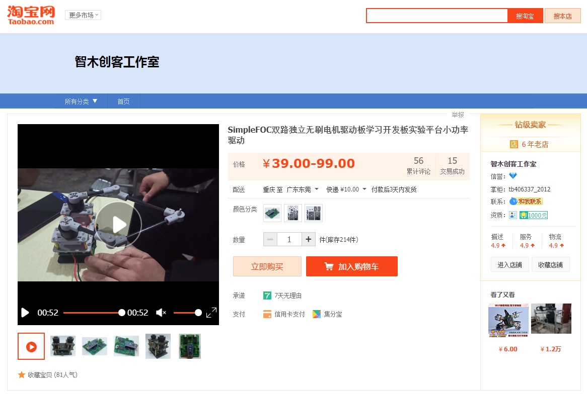
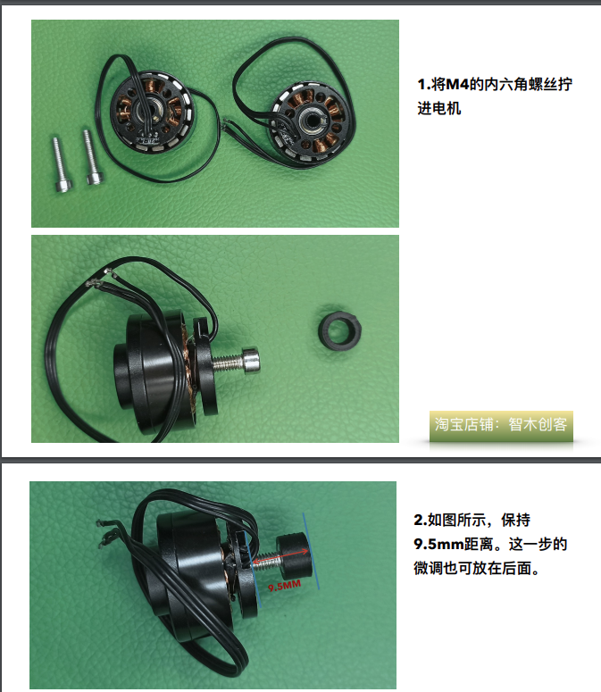
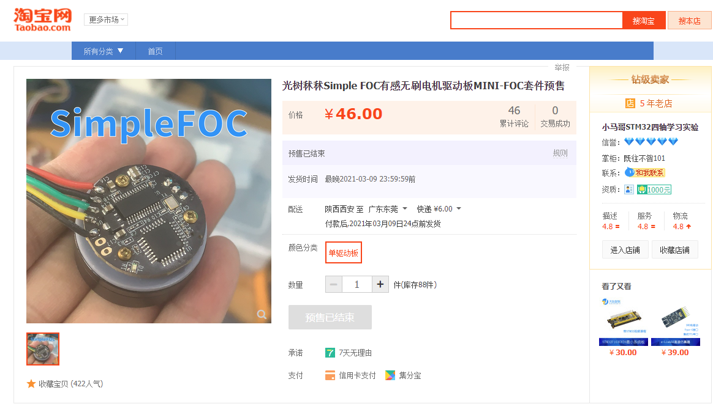
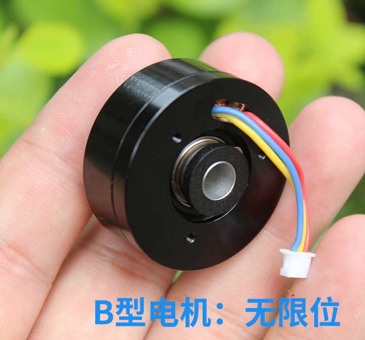
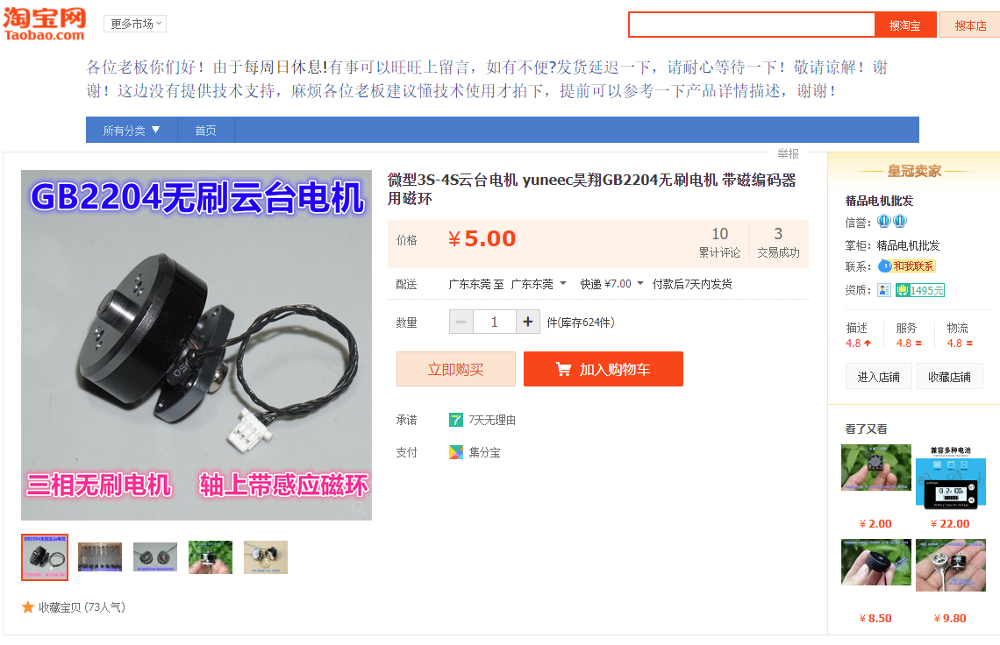

Foc套件选型
电机选型
目前能看到的同类产品有两套
一个是淘宝店“智木创客工作室”推出的
另一个好像是bilibili一个up主出的，叫光树秫秫
智木创客工作室的套件
智木创客工作室推出的淘宝链接是这个

这家出的有点意思，他用螺丝+打印件+磁铁的方式，进行组装，强行加了一个磁编码器，可以买几个电机稍微研究一下，说不定可以改改

至于电机的货源，也找到了，这里是链接（立华电子永远的神！）
光树秫秫出的板子

下面这个是视频介绍
稍微找了下可以看出，他的电机是这个，成本好像还行，不是很贵（经典背景）

但是淘宝找了一下，好像没有卖的了（可能这就是他们预售没有继续的原因吧），找了个类似的，链接在这里

结论
我比较偏向于用第二个，这个有自带的磁环，而上面那个要额外增加一个螺丝+磁铁
驱动方案选型
L6234PD013TR
大概看了下，SimpleFoc和智木创客工作室这两家用的方案都是这个
drv8313
光树秫秫选用的是这个型号